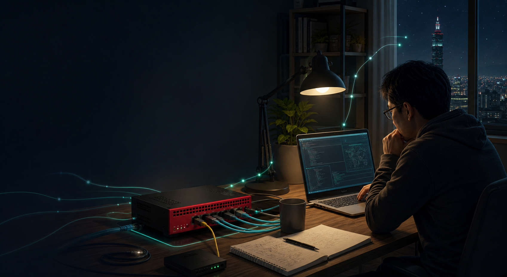

1
128 bit，8 段，16 進位
IPv4 是 4 段、32 bit；IPv6 是 8 段、128 bit。每段 16 bit，用 4 位十六進位剛好表示。

從 IPv4 老兵重新理解 IPv6
取得位址不等於所有應用都正常。從 PPPoE、前綴委派與路由，一路補到 MSS、前綴更新與重連驗收；保留原始探索，也明確寫出後來發現的缺漏。
先看後續實測與補正Why This Took Time
IPv4 時代熟悉的 NAT、固定 IP、預設閘道直覺，在 IPv6 裡不會完全消失，但會換一種方式出現。這次真正麻煩的不是單一設定，而是 WAN、LAN、RA、防火牆政策、SD-WAN 與路由必須一起對上。
家裡的 FortiGate 60F 一直只有 IPv4 在跑。這次想說中華電信光世代 PPPoE 本來就有雙協定，乾脆順手把 IPv6 開起來。原本以為就是 GUI 勾一勾，結果從「WAN 端要不要 IPv6」一路查到「SD-WAN Zone 底層路由邏輯」。
如果你也是 IPv4 時代學網路、對 IPv6 一直有種「看得懂但不熟」的感覺，這份紀錄的價值不只是設定步驟，而是把整個判斷鏈補回來。
IPv6 Concepts
IPv6 看起來可怕，主要是十六進位位址很長。真正要先抓住的是位址結構、縮寫規則、Link-Local、SLAAC、DHCPv6-PD，以及「為什麼不靠 NAT」。
IPv4 是 4 段、32 bit；IPv6 是 8 段、128 bit。每段 16 bit，用 4 位十六進位剛好表示。
`::` 代表連續整段 0，實際補幾段要看已寫出的段數，而且一條位址只能出現一次。
一般採 SLAAC 的 LAN 使用 /64：前 64 bit 是 Prefix，後 64 bit 是 Interface ID。但 /64 不是所有 IPv6 連線的唯一長度；WAN、回環及點對點鏈路可能不同。
Link-Local 範圍是 fe80::/10，只在本鏈路使用，不會被路由到 Internet。RA 與鄰居探索會用到；指定這類 gateway 時也必須有正確的出口介面。
用 RA 告訴 client Prefix，再讓 client 自己組位址；DNS 等資訊則可能由 RA/RDNSS 或 DHCPv6 補上。
ISP 不是只給你一個 IPv6，而是委派一段 Prefix，讓 LAN 端設備能拿到真正可路由的 IPv6 位址。
2001:db8:1234:5678
前 64 bit：網路 Prefix
可以想成 IPv4 的網段概念，但通常用 /64 作為 LAN 基本單位。
59c6:384d:0c2d:d944
後 64 bit：Interface ID
可由 SLAAC 自動產生，也可在特定需求下做固定配置。
Topology
本例採 SD-WAN Zone 出口：WAN 取得委派 Prefix，LAN 發 RA，policy 放行，member 與 IPv6 default route 必須接起來。這是本例的路由設計，不代表每一種 FortiGate IPv6 架構都必須手動填 gateway6。
Implementation
以下保留原始 WAN2 / IAID 6 案例，並補齊缺漏。前提是 IPv4 PPPoE 已建立、WAN2 已加入 virtual-wan-link，且你已備份設定並確認所有物件 ID。這不是完整設備組態，也不會替你建立 PPPoE 帳號或 SD-WAN 主備規則。
到 System → Feature Visibility 顯示 IPv6 功能。這是 GUI 可見性設定，不等於已取得 PD、建立路由或放行流量；仍需逐項設定與驗收。
本例明確列出 PD 的 IAID 6；若設備已有其他 IAID，不要直接新增第二組或改掉原值。先看租約、協商與現有設定。重新啟停 PD 可能影響 LAN IPv6，不能當作第一個無風險的檢查步驟。
config system interface
edit "wan2"
config ipv6
set ip6-mode pppoe
unset ip6-allowaccess
set dhcp6-prefix-delegation enable
config dhcp6-iapd-list
edit 6
next
end
end
next
endIPv6 連線不需要 WAN 開放 HTTP / HTTPS 管理。此範例不開 WAN IPv6 管理服務；有遠端維運需求時，另行設計限制來源的管理存取。管理存取與 LAN 轉送 policy 是不同層。
LAN 端不能只是自己亂填 IPv6，而是要吃 WAN 端拿到的 delegated prefix。這裡 IAID 要跟 WAN 端實際 DHCPv6-PD 的 IAID 對上。
config system interface
edit "internal"
config ipv6
set ip6-mode delegated
set ip6-delegated-prefix-iaid 6
set ip6-upstream-interface "wan2"
set ip6-subnet ::1/64
set ip6-send-adv enable
set ip6-max-interval 30
set ip6-min-interval 10
config ip6-delegated-prefix-list
edit 1
set delegated-prefix-iaid 6
set upstream-interface "wan2"
set autonomous-flag enable
set onlink-flag enable
set subnet ::/64
set rdnss-service specify
set rdnss 2606:4700:4700::1111 2001:4860:4860::8888
next
end
end
next
end上例以 RDNSS 發送兩個公共 IPv6 DNS，是一種選擇，不是必須使用的服務。沿用 IPv4 DNS 也能查詢 AAAA；若需要內網名稱或過濾，應改用適合的 DNS。10～30 秒 RA 間隔是原始測試值，不是所有家庭網路的最佳值。DNS 與 M/O flags 需配合終端支援，不應盲目開啟 DHCPv6。
本例建立 IPv6 專用放行規則；IPv4 放行不代表 IPv6 已放行。FortiOS 7.2 的規則可在同一 config firewall policy 中管理。本例使用 ISP 原生可路由 PD，不需要 NAT；這不表示 IPv6 完全不存在 NAT 功能。
config firewall policy
edit <unused-policy-id>
set name "SD-WAN-IPv6"
set srcintf "internal"
set dstintf "virtual-wan-link"
set action accept
set srcaddr6 "all"
set dstaddr6 "all"
set schedule "always"
set service "ALL"
set nat disable
next
end此為家庭 LAN 對外的寬鬆範例，不適用所有 VLAN 或企業環境。確認 LAN 可出站、回程由 session 處理，沒有不必要的 WAN → LAN 規則；IPv6 沒有 NAT 不等於沒有防火牆。MSS 另見後續實測章節，先確認需求再加。
本例當時缺少 SD-WAN 出口的 IPv6 gateway。先確認 WAN2 實際對應哪個 PPP 介面，再抓上游 RA 來源；ppp2 / ppp3 是執行期名稱，可能改變，不可固定照抄。抓包後核對 RA、路由與 member，不要從其他人的文章複製 gateway。
diagnose netlink interface list
diagnose sniffer packet <actual-ppp-interface> "icmp6" 4 10
config system sdwan
config members
edit <wan2-member-id>
set gateway6 <observed-link-local-gateway>
next
end
end選定 PPP 介面的 RA（type 134）來源才是要核對的對象；鄰居探索封包不是 RA。若沒有看到 RA，先確認介面與抓包時機，不要猜位址；未滿抓包數量時用 Ctrl+C 結束。手動 gateway 也應在重撥／上游變更後複查。
既然流量要走 SD-WAN Zone，IPv6 default route 也要指到 `virtual-wan-link`，不要直接寫死到 `wan2`。
config router static6
edit <unused-route-id>
set dst ::/0
set sdwan-zone "virtual-wan-link"
next
enddiagnose ipv6 address list
diagnose firewall proute6 list
get router info6 kernel
execute ping6 2606:4700:4700::1111LAN 端檢查全球單播位址、RA 預設路由、DNS 及來源位址狀態，不只看是否以 2001 開頭。test-ipv6.com 與 ping 可做基本檢查，但不能取代實際 HTTPS、長連線及重撥驗收。proute6 是 policy route 清單；空白不代表 kernel 沒有 default route。
Debug Record
這篇最有價值的不是「最後設定長什麼樣」，而是知道卡住時應該查哪一層，以及怎麼判斷問題不在你原本以為的地方。
Field Notes · 2026-10-13
初版完成的是基本連通。後續實測補上封包尺寸、前綴生命週期與雙 WAN 的限制；不能倒推成 7 月當時一定沒有成功。
一般網頁與 Google IPv6 HTTPS 正常，但 LINE 無法載入登入 QR code。原先看到測試 connect-timeout，曾誤判為 TCP 未連線；抓包後確認 SYN / SYN-ACK / ACK 成功，問題出現在 TLS 資料傳送階段。
修改前，LAN 與 PPP 出口的 SYN 都宣告 MSS 1440；伺服器回傳資料出現序號缺口、ACK 停滯。僅調整 IPv6 policy 的 sender / receiver MSS 為 1432 後，封包確認出口宣告已改變，同一 LINE IPv6 目標完成 TLS，使用者也確認登入恢復。沒有修改 PC、DNS 或重新撥號。
config firewall policy
edit <existing-ipv6-policy-id>
set tcp-mss-sender 1432
set tcp-mss-receiver 1432
next
end原理：IPv6 路由器不替轉送封包做分片。過大的封包需要透過 ICMPv6 Packet Too Big 與 PMTUD 通知來源縮小；不要把 ICMPv6 當作只有 ping 而全部擋掉。MSS clamp 是 TCP 的尺寸防護，不是 PMTUD 的替代品，也不處理 UDP / QUIC。
證據支持本次故障與封包尺寸／路徑 MTU 處理有關，但尚未確認哪一跳丟棄封包，或是否有哪一段阻擋 Packet Too Big。不能直接歸因為 ISP、FortiOS bug，或宣稱所有 IPv6 問題都已解決。
後續檢查曾發現 PC 留有多組舊 prefix，且仍是 Preferred。拿到新 prefix 並不保證裝置已停止使用舊來源。
檢查 RA 的 preferred / valid lifetime、PC 的來源位址與實際連線。Deprecated 不等於立刻刪除；舊連線與 valid lifetime 仍需考量。本次曾用臨時 RA 退役已失效的前綴，但不能把這種修復當成永久自動更新保證。
不要隨意把所有 lifetime 設為 0，也不要照抄別人的舊 prefix。FortiOS 7.2.13 的 delegated prefix 欄位曾拒絕本次嘗試的自訂 lifetime；不提供未經驗證的通用修復指令。
本環境是一條 HiNet 實體線路的兩次 PPPoE：WAN1 固定 IPv4、WAN2 浮動 IPv4。可提供部分撥號／上游異常時的替代出口，但不是兩條獨立線路的實體備援。
10 月配合 WAN2 僅備用出站的角色，改由 WAN1 / IAID 5 提供 IPv6。LAN 使用 WAN1 的 PD，不應直接把同一來源前綴經 WAN2 送出並當作有效 IPv6 備援。
若要做真正的 IPv6 雙出口，需另行設計前綴、來源選路、通告與切換；本篇沒有宣稱已完成。原始 WAN2 / IAID 6 並非因角色調整就變成錯誤。
Acceptance Checklist
由設定一致性到端點應用，逐層核對。表格是驗收要求，不代表所有裝置、重撥或未來異常都已測過。
| 設定項目 | 值 / 判斷 |
|---|---|
| WAN 與 PD | 7 月範例 WAN2 / IAID 6；10 月角色調整改為 WAN1 / IAID 5。租約有效，LAN 的兩處 IAID 與 upstream 一致。 |
| IPv6 取得方式 | PPPoE + DHCPv6 Prefix Delegation。 |
| LAN 介面 | `internal`，使用 delegated prefix 並發送 RA。 |
| Delegated Prefix IAID | WAN PD、LAN delegated address 與 prefix 通告三處對應。6 是原始範例，並非固定要求。 |
| RA 發送間隔 | 原始測試值 10～30 秒；不是通用最佳化建議，縮短間隔也不能取代舊前綴退役。 |
| LAN prefix flag | Autonomous flag / Onlink flag 需要正確啟用。 |
| 防火牆政策 | 新增獨立 IPv6 policy，`srcaddr6 all` → `dstaddr6 all`，不開 NAT。 |
| SD-WAN 出口 member | 本例核對 gateway6、實際 PPP 介面與上游 RA。更換出口時，LAN 前綴來源與 IPv6 路由需同步檢查。 |
| IPv6 default route | `static6` 指向 `virtual-wan-link` SD-WAN Zone。 |
| 端點與 DNS | 全球單播位址、RA default route 與 DNS 可用；IPv4 DNS 也能查 AAAA。不能只看 WAN 顯示位址。 |
| 實際應用 | 由 LAN 裝置分別測 IPv4 / IPv6 HTTPS、TLS、較大傳輸與平常使用的應用。HTTP 404 若已完成 TLS，仍可證明該次 HTTPS 傳輸成功，不代表服務登入成功。 |
| 封包尺寸 | 核對實際 PPP MTU 與 SYN 的 MSS；有症狀時抓包確認。檢查 ICMPv6 Packet Too Big；本次 TCP 修正不涵蓋 UDP / QUIC。 |
| 重撥與重連 | 維護時段觀察租約、gateway、default route、RA 新舊 prefix 與終端 Preferred / Deprecated 狀態；有新位址不代表舊來源已退役。 |
| 安全邊界 | WAN 不開不必要管理服務；未授權外網不能主動進入 LAN。核對 IPv6 policy 與 local-in，不能把 IPv4 規則當成 IPv6 的保護證明。 |
| 主備切換 | 分別驗收 IPv4 與 IPv6；本環境 IPv6 單出口，不把 WAN2 的 IPv4 備援宣稱為 IPv6 備援。 |
Get-NetIPAddress -AddressFamily IPv6 |
Select-Object InterfaceAlias, IPAddress, PrefixLength, AddressState
Get-NetRoute -AddressFamily IPv6 -DestinationPrefix "::/0"
Get-DnsClientServerAddress
Resolve-DnsName www.google.com -Type AAAA
curl.exe -4 -I --connect-timeout 10 --max-time 30 https://www.google.com/
curl.exe -6 -I --connect-timeout 10 --max-time 30 https://www.google.com/上述指令不更改網路設定。AAAA 查詢成功不等於 IPv6 路徑成功；單一網站 HEAD 成功也不能涵蓋所有封包尺寸或應用。再測平常使用的登入、影片、較大下載，以及 IPv4 / IPv6 差異。有 VPN、proxy 或多張網卡時，須核對實際來源與出口。
Afterthought
真正要補起來的是整條鏈：PPPoE、DHCPv6-PD、IAID、RA、SLAAC、防火牆政策、SD-WAN member、IPv6 default route。只要其中一段沒有對上，表面症狀可能會讓你誤判問題在完全不同的地方。
對這個雙協定家庭環境，最有用的做法是分開驗收 IPv4 與 IPv6，再追同一個應用的實際路徑。不要用單次 ping、測試網站分數或「能開網頁」代替整條鏈路的檢查。
References & Revision
官方文件用來核對功能；個案結論來自本次前後封包與應用測試。CLI 仍須以實際 FortiOS 的 help 與設定為準。